Sistema de Reserva de Salas
Trabalho Prático I · Programação Orientada a Objetos
Instituto de Computação (IComp) · Universidade Federal do Amazonas · Novembro de 2026
Objetivo e requisitos
- Coordenar o uso das salas comuns do IComp: salas de reuniões, seminários e laboratórios de graduação.
- Impedir que duas reservas ocupem a mesma sala no mesmo horário.
- Requisitos mínimos: cadastro, remoção, alteração e consulta de salas e de usuários; reserva e consulta de salas; relatórios para as portas.
- Requisitos obrigatórios: interface gráfica (Swing) e banco de dados (SQLite).
- Itens extras: validações de dados, remoções protegidas, busca e ordenação nas tabelas.
Reserva de Salas · IComp · TP1 POO2/15
Arquitetura em camadas
InterfaceSwing · abas e painéis
ServiçoReservaService · regras
DAOJDBC · PreparedStatement
BancoSQLite · salas.db
- Interface: abas Salas, Usuários, Reservas e Relatórios, com dados recarregados ao trocar de aba.
- Serviço: verifica conflitos de horário e impede remover salas ou usuários que tenham reservas.
- DAO: acesso às tabelas com consultas parametrizadas, sem concatenar valores no SQL.
- Modelo: classes Sala, Usuario e Reserva validam seus dados já no construtor.
Reserva de Salas · IComp · TP1 POO3/15
Modelo de dados
salas
id (PK)
nome
tipo
capacidade
reservas
id (PK)
sala_id (FK)
usuario_id (FK)
data
hora_inicio
hora_fim
finalidade
- Cada reserva pertence a uma sala e a um usuário; uma sala ou usuário pode ter várias reservas.
- Conflito: mesma sala, mesma data e intervalos de horário que se cruzam (início antes do fim do outro e fim depois do início do outro).
- Horários adjacentes, como 10:00-11:00 depois de 08:00-10:00, são aceitos.
Reserva de Salas · IComp · TP1 POO4/15
Janela principal e cadastro de salas
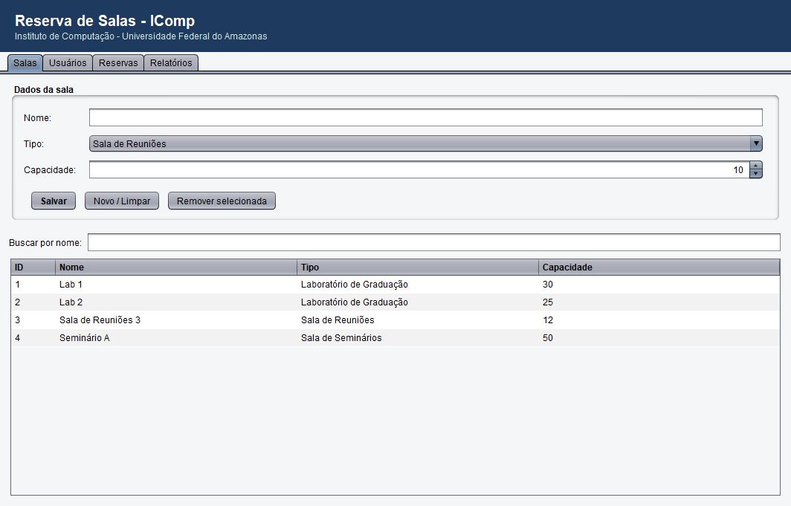
Aba Salas: formulário e tabela de salas cadastradas- Cabeçalho com o nome do sistema e abas para cada área de trabalho.
- Tabela com ID, nome, tipo e capacidade, ordenável por qualquer coluna.
- Botões Salvar, Novo / Limpar e Remover selecionada.
Reserva de Salas · IComp · TP1 POO5/15
Edição de salas
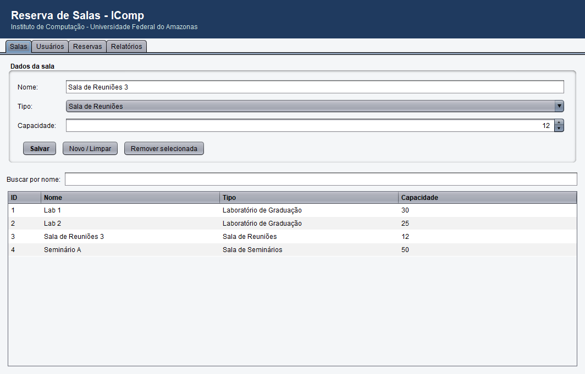
Clique em uma sala para carregar seus dados no formulário- Ao selecionar uma linha, o formulário é preenchido para alteração.
- Nome obrigatório, tipo escolhido em lista e capacidade mínima de 1 pessoa.
- Novo / Limpar prepara o formulário para cadastrar outra sala.
Reserva de Salas · IComp · TP1 POO6/15
Consulta de salas por nome
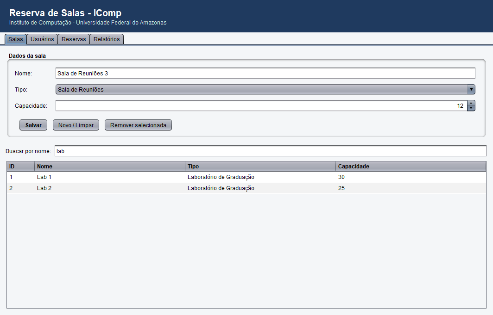
Busca por "lab": a tabela mostra só as salas que contêm o texto- A busca é feita enquanto o usuário digita.
- Não diferencia letras maiúsculas e minúsculas.
- Lab 1 e Lab 2 aparecem; as demais salas ficam ocultas.
Reserva de Salas · IComp · TP1 POO7/15
Regra de remoção protegida
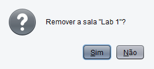
1. Confirmação antes de remover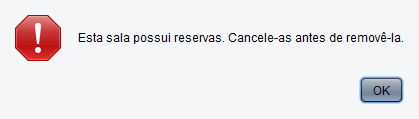
2. Sala com reservas não é removida- A remoção pede confirmação antes de qualquer alteração.
- Se a sala tiver reservas, o sistema recusa a remoção e orienta a cancelar as reservas antes.
- A mesma regra vale para usuários com reservas.
Reserva de Salas · IComp · TP1 POO8/15
Cadastro de usuários
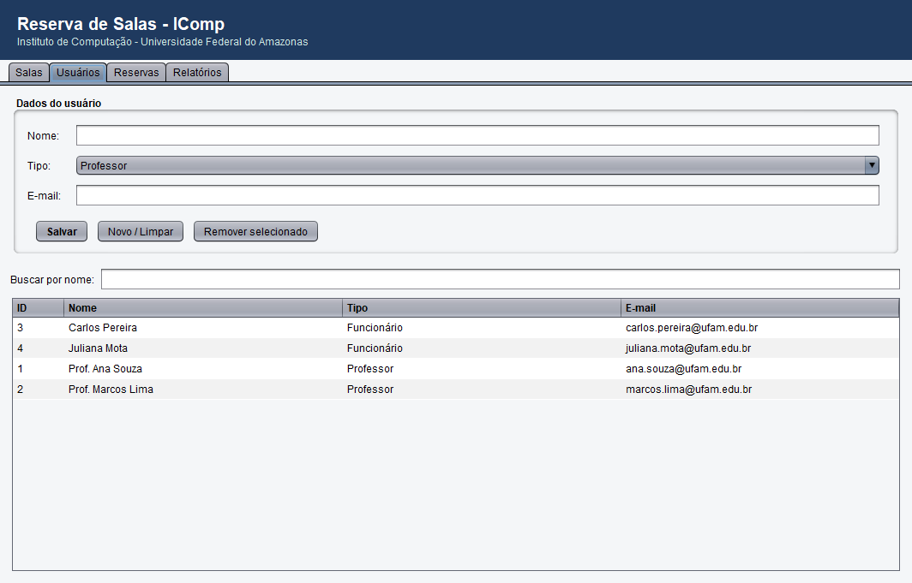
Aba Usuários: professores e funcionários cadastrados- Cadastro de professores e funcionários com nome, tipo e e-mail.
- O e-mail precisa conter "@", ou o cadastro é recusado com mensagem clara.
- Busca por nome e tabela ordenável, como na aba de salas.
Reserva de Salas · IComp · TP1 POO9/15
Nova reserva
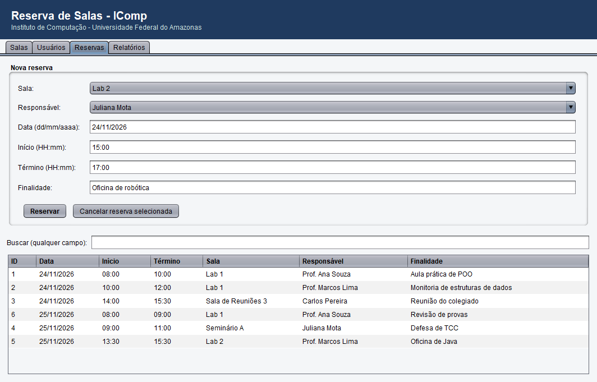
Formulário de reserva com sala, responsável, data, horários e finalidade- Campos: sala, responsável, data (dd/mm/aaaa), início e término (HH:mm) e finalidade.
- Datas e horários inválidos são recusados com mensagem indicando o campo.
- A tabela abaixo mostra todas as reservas, ordenadas por data e horário.
Reserva de Salas · IComp · TP1 POO10/15
Reserva confirmada e conflito de horário
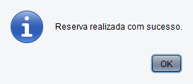
1. Reserva sem conflito é gravada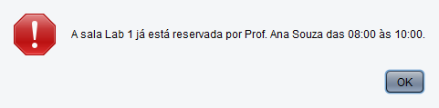
2. Horário ocupado: o sistema informa quem ocupa a sala- Se o horário se sobrepõe a outra reserva da mesma sala, a reserva é recusada.
- A mensagem indica a sala, o responsável e o horário que já estão reservados.
- Salas diferentes, datas diferentes ou horários que não se cruzam continuam disponíveis.
Reserva de Salas · IComp · TP1 POO11/15
Lista de reservas e cancelamento
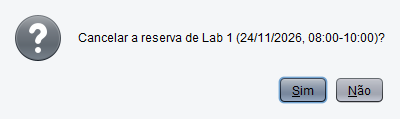
1. Cancelamento pede confirmação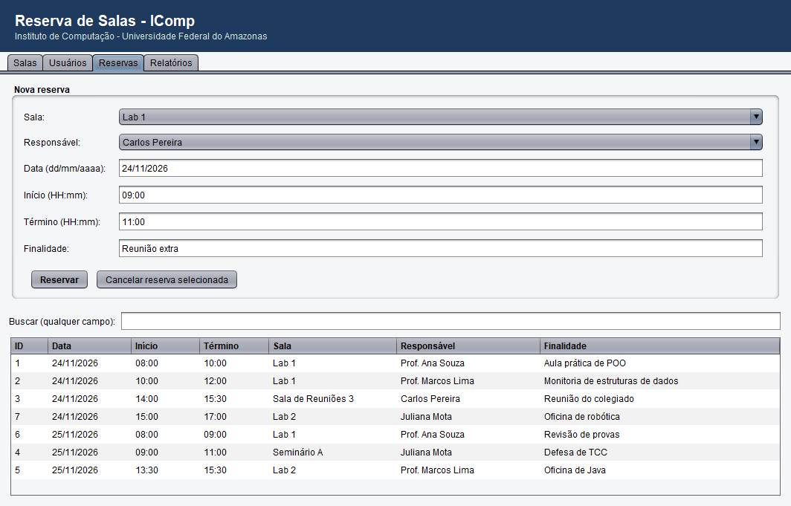
2. Lista atualizada após o cancelamento- Selecione uma reserva na tabela e clique em "Cancelar reserva selecionada".
- A busca na lista procura em qualquer campo: sala, responsável ou finalidade.
- Após cancelar, o horário fica livre para uma nova reserva.
Reserva de Salas · IComp · TP1 POO12/15
Relatório para a porta da sala
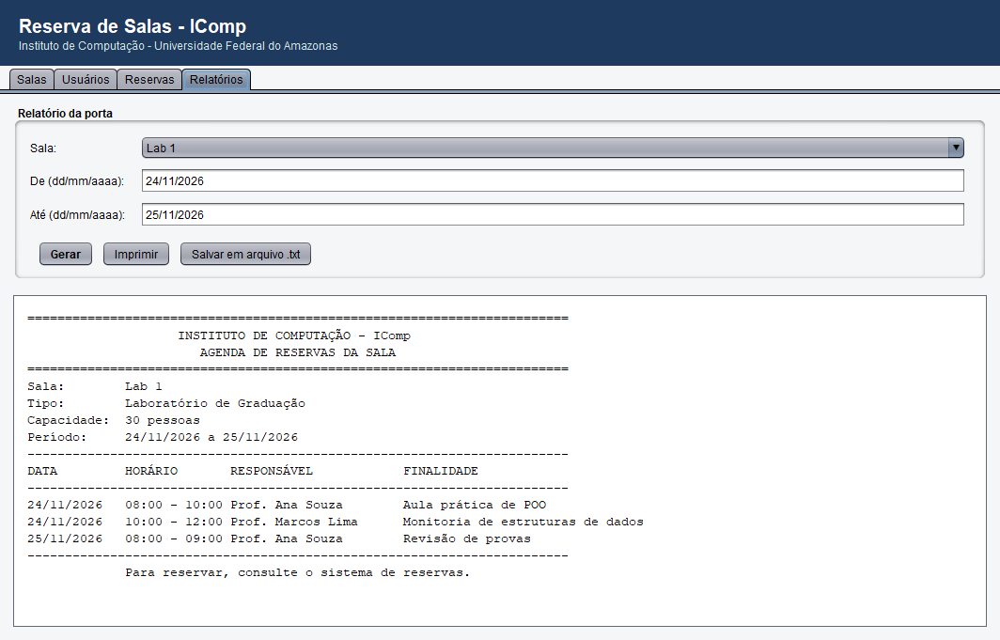
Agenda da sala no período escolhido, pronta para impressão- Escolha a sala e o período; o relatório lista as reservas com data, horário, responsável e finalidade.
- Cabeçalho com o nome, o tipo e a capacidade da sala.
- Botões Imprimir e Salvar em arquivo .txt, para afixar na porta.
Reserva de Salas · IComp · TP1 POO13/15
Testes realizados
| Área | Verificações | Cobertura |
|---|
| Banco e cadastro | 6 | Criação das tabelas, inserção com id, atualização e listagem |
| Reservas e conflitos | 8 | Conflitos parciais e totais, horários adjacentes, outra sala ou data |
| Validações | 5 | Fim antes do início, finalidade vazia, e-mail, capacidade e nome |
| Consultas | 4 | Reservas por sala e período, ordenação por horário |
| Remoções e cancelamento | 6 | Bloqueio de remoção com reservas, cancelamento e liberação do horário |
| Relatório da porta | 4 | Conteúdo do relatório, reservas canceladas e sala disponível |
| Total | 33 | 33 verificações aprovadas, 0 falhas. |
- As verificações rodam sobre o banco SQLite real, em uma pasta temporária.
- Também foi conferido que a interface inicia sem exceções.
Reserva de Salas · IComp · TP1 POO14/15
Conclusão
- O sistema atende aos requisitos mínimos e aos obrigatórios (GUI e banco de dados).
- Regras de negócio centralizadas no serviço de reservas, com testes automatizados.
- Código-fonte público: github.com/Lucased22/reserva-salas-poo
- Documentação técnica em Javadoc, entregue junto com esta apresentação.
Reserva de Salas · IComp · TP1 POO15/15